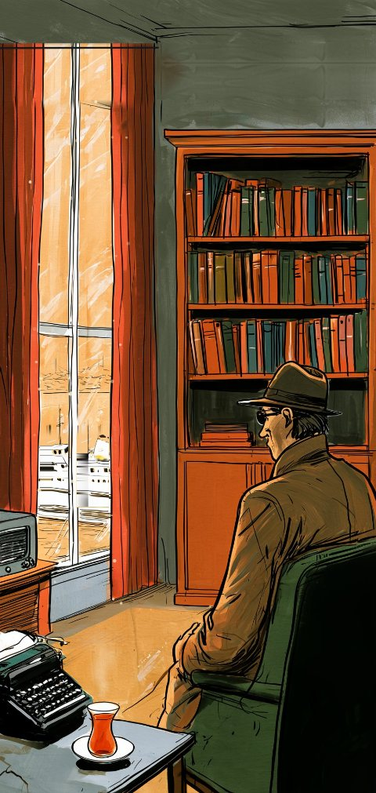
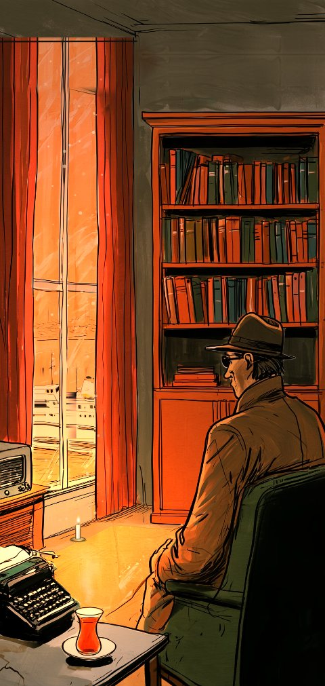
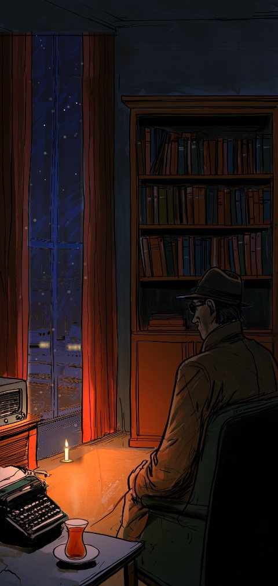

Başar! Kitaplık
Kitapların için bir ev.
Evindeki kitaplığın telefondaki hâli. Her türün kendi odası var; ışık gün boyu değişir, akşam lambalar yanar. Hangi kitabın sende olduğunu, nerede kaldığını, kime verdiğini hep bilirsin.
Her türün kendi odası
Çağdaş Türk edebiyatı, dünya klasikleri, korku, polisiye, şiir, tarih ve dahası: yirmiden fazla oda, her biri elle boyanmış gibi. Aralarında evin içinde dolaşır gibi kaydırarak gezersin.
- Odalar yaşıyor. Çaydan buhar çıkar, pencereden vapur geçer, camdan yağmur süzülür, korku odasında şimşek çakar.
- Sabah, akşam, gece. Odalar telefonunun saatine göre değişir; gece mumlar ve gaz lambaları odayı gerçekten aydınlatır.
- Sade mi seversin? İstersen odaları kapat, sade raflar ya da kapak ızgarası kullan.



Aynı oda, günün üç saati. Telefonunun saatine uyar; istersen Ayarlar’dan sevdiğini seçersin.

Kitaplığa dokun, yaklaş
Odadaki kitaplığa dokununca kamera yaklaşır ve senin kitapların raflarda dizili gelir. Liste değil, gerçek bir raf.
- Kalın kitap rafta da kalın. Sırtın genişliği sayfa sayısına göre.
- Raf dolar. Bir rafa kaç kitap sığacağını sen seçersin; dolunca yeni raf açılır.
- Senin rengin. Kahve, açık kahve, kiraz, beyaz, yeşil, mavi, siyah: sekiz kitaplık rengi.
- Sırt ya da kapak. Rafta sırtları, kapakları ya da ikisini karışık göster.

Barkodu okut, bitti
Ortadaki düğmeye bas, kitabın arkasındaki barkodu okut. Adı, yazarı, sayfa sayısı ve kapağı gelir; kitap kendi odasının rafına kendiliğinden geçer.
- “Bende var mı?” Kitapçıda mısın? Okut; rafında mı, ödünçte mi, istek listende mi, söylesin.
- Baskı ve basım. Elindeki kitabın kaçıncı baskı ve basım olduğunu da yaz.
- Kendi kapak fotoğrafın. Kapağı bulunamadıysa fotoğrafını çek.

Renkli kurdeleler
Sevdiğin cümleleri, notlarını, kaldığın yeri ayraç olarak sakla; istediğin kadar. Her ayraç türüne bir renk ver: rafta kitabın üstünden o renkte kurdele sarkar, dokununca o kitabın ayraçlarına gidersin.
- Günün sözü. Her gün sakladığın cümlelerden biri seni karşılar (istersen kapatırsın).
- Kendi türlerin. Çok sevdiğim sözler, not, kaldığım yer ya da senin koyduğun ad.

Ne kadar okudun?
Kronometre yok, dakika saymak yok: yalnız geldiğin sayfayı yazarsın. Gerisini defter yapar.
- Hafta, ay, yıl. Okunan sayfa, biten kitap ve günlük sayfa hedefin.
- “Yaklaşık 21 günde bitirirsin.” Kendi okuma hızına göre, her kitap için.
- Ne zaman okuyorsun? Günün hangi saatlerinde en çok okuduğunu gör.
- Listeler. İstek listesi, okunacaklar, bitenler, hediye gelenler, yarım kalanlar ve kendi listelerin.

Kime verdiğini unutma
Ödünç verdiğin kitaplar giriş holündeki kendi raflarında bekler: kimde, ne zamandan beri, bir bakışta. İstersen geri getirme tarihi koy.
- Ödünç aldıkların da. Senin olmayan kitaplar ayrı durur, kendi kitaplarına karışmaz.
- Arkadaşının kitaplığı. Kitaplığını bir kodla paylaş; arkadaşın bir kitabın sende olup olmadığını görür. Arada sunucu yok.

Senin yazın, senin rengin
Elle seçilmiş altı yazı tipi, üç yazı boyutu, vurgu ve duvar rengi, karanlık mod. İlk açılışta da sayfa çevirme sesiyle kısa, defter gibi bir tanıtım.

Başka yerde bulamayacakların
Yaşayan odalar
Elle boyanmış odalar; küçük hareketler ve saate göre değişen gerçek ışık.
Rafta kurdele
Ayraçların kitabın üstünde renkli kurdele olarak görünür.
Dakika değil, sayfa
Kronometre yok. Sayfanı yaz, hesabı defter yapar.
Gerçekten gizli
Hesap yok, reklam yok, takip yok. Kitap ararken yalnız ISBN numarası sorulur.
Kitaplığın telefonundaki bir dosyada durur ve telefonunun yedeğine girer. İstersen yedeği kendin de alırsın.